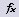
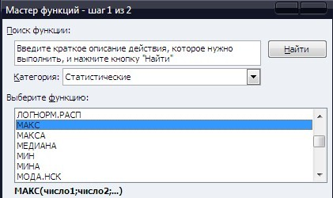
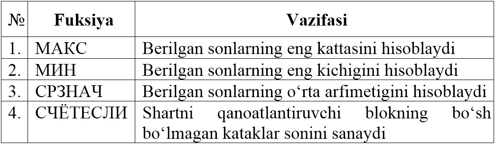
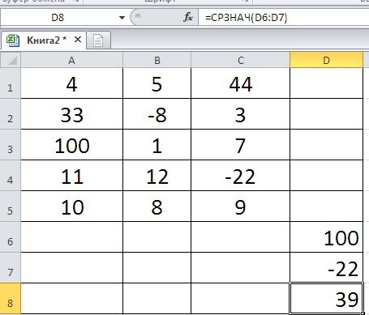
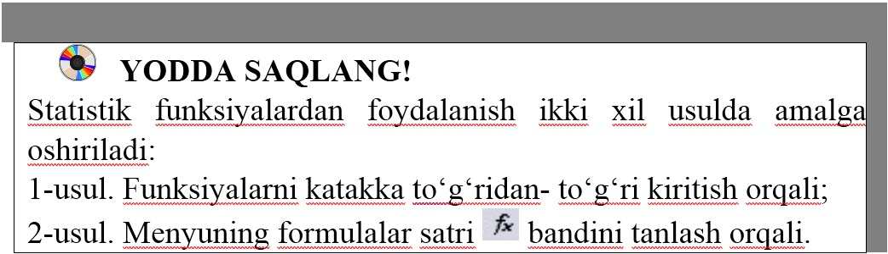

MS Excel 2010 ning imkoniyatlaridan yana biri, bu statistik funksiyalardan foydalanib tegishli masalalarni yechish hisoblanadi.
Statistik funksiyalardan foydalanish ikki xil usulda amalga oshiriladi:
1-usul. Funksiyalarni katakka to‘g‘ridan-to‘g‘ri kiritish orqali;
2-usul. Menyuning formulalar satri  bandini tanlash orqali, bu holatda quyidagi oyna o‘chiladi:

MS Excel 2010 da statistik funksiyalar ko‘p bo‘lib, biz qyida ayrim funksialar va ularning vazifalarini kelturamiz:

1-mashq. A1:C5 blokdagi sonlarning eng kattasi va eng kichigining o‘rta arfimetigini D8 katakka hosil qiling.
Bajarish:
• A1:C5 bloklarga ixtioriy sonlarni kiritamiz;
• D6 katakka quyidagi formulani kiritamiz (berilgan sonlarning eng kattasini topish formulasi): =МАКС(A1:C5);
• D7 katakka quyidagi formulani kiritamiz (berilgan sonlarni eng kichigini topish formulasi): =МИН(A1:C5);
• D8 katakka quyidagi formulani kiritamiz: (berilgan sonlarni o‘rta arfimetigini hisoblash formulasini): =СРЗНАЧ(D6:D7); Natijada quyidagi oyna hosil bo‘ladi:


1. Statistik funksiyalarning ro‘yxtidan МАКС fuksiyasini tanlash ketma-ketligini tushuntirib bering?
2. Berilgan 10 ta sonlar ichidan eng katta sonni toping. Mashqni ikki usulda bajaring.
1. 4,6,8,9,10 sonlarning o‘rta geometrigini hisoblang.
2. Mustaqil ravishda СЧЁТЕСЛИ funksiyasi yordamida bironta mashq o‘ylang va uni bajaring.